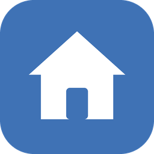

Informasi kamar terbuka
Calon penghuni bisa melihat kamar yang masih kosong, lengkap dengan tipe, harga, dan fasilitasnya tanpa perlu login atau bertanya satu per satu.

Kos Abah AndungTinggal nyaman tidak harus ribet. Di Kos Abah Andung, kamar terawat, tagihan jelas setiap bulan, dan keluhan penghuni dicatat serta ditanggapi langsung oleh pemilik.
Login Lihat kamar tersediaCalon penghuni bisa melihat kamar yang masih kosong, lengkap dengan tipe, harga, dan fasilitasnya tanpa perlu login atau bertanya satu per satu.
Tagihan terbit setiap bulan dengan periode, rincian biaya, dan tanggal jatuh tempo, sehingga tidak ada lagi tagihan yang terlewat atau salah hitung.
Pembayaran bisa dilakukan tunai atau transfer. Bukti pembayaran diperiksa pemilik dan riwayatnya tersimpan rapi.
Lampu mati, air macet, atau kamar mandi bermasalah? Laporkan lewat sistem dan pantau statusnya dari Baru, Diproses, sampai Selesai.
Tersedia beberapa tipe kamar dengan kisaran harga berbeda, jadi bisa disesuaikan dengan kebutuhan dan anggaran masing-masing.
Data penghuni hanya bisa dilihat oleh pemilik dan penghuni yang bersangkutan. Halaman publik tidak pernah menampilkan data penghuni.
Kos Abah Andung adalah usaha kos yang dikelola langsung oleh Abah Andung. Dulu pencatatan penghuni, tagihan, dan keluhan dilakukan dengan buku catatan, nota kertas, dan grup pesan. Cara itu mudah dipakai, tetapi semakin sulit diikuti saat jumlah kamar dan penghuni bertambah.
Karena itu Kos Abah Andung kini memakai sistem berbasis web. Pemilik dapat memantau kondisi kos kapan saja, penghuni mendapat kejelasan soal tagihan, dan calon penghuni dapat melihat kamar yang tersedia sebelum menghubungi pemilik.
Tujuan kami sederhana, membuat penghuni merasa seperti di rumah sendiri, dengan pengelolaan yang rapi dan mudah dihubungi.
Ingin survei kamar atau bertanya lebih dulu? Silakan hubungi Abah Andung lewat kontak berikut.
Alamat: Ketintang, Fakultas Vokasi, Universitas Negeri Surabaya
Pemilik: Abah Andung
WhatsApp / Telepon: 08123456789
Email: andung@kosabah.com
Jam survei: setiap hari, 08.00 – 17.00